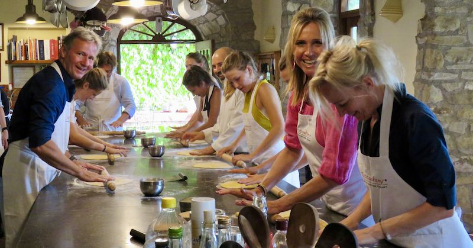

Trattoria Gioia
Ciao! We're Trattoria Gioia
In 2015, Gioia breathed life into the original Trattoria Gioia in Sacramento. What started as a family run deli has since revitalized into the well known Trattoria Gioia. Much beloved by locals and travelers alike, Gioia was an early adopter of the farm-to-fork philosophy. With over 65+ years of experience Gioia, along with the rest of the family, offer a unique take on Italian cuisine.